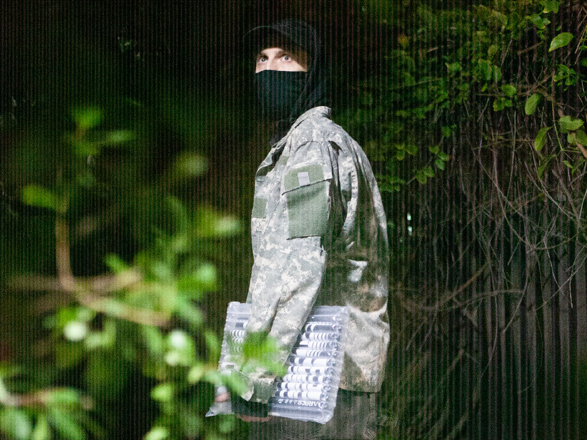

KOWLOON WALLED CITY GIGA MIX
Total runtime: 9 hrs 55 min 19 sec
Released: December 21, 2024
- 01 - 𝔡𝔞𝔲𝔫𝔱𝔩𝔢𝔰𝔰 𝔠𝔥𝔬𝔦𝔯
00:58:19 ↓
WAV 617MB
MP3 140MB
- 02 - 𝓀𝒶𝓉𝒶𝒷𝒶𝓉𝒾𝒸 𝓌𝒾𝓃𝒹
00:59:59 ↓
WAV 635MB
MP3 144MB
- 03 - 𝙵𝚘𝚐 𝚆𝚊𝚕𝚕𝚜
00:59:52 ↓
WAV 633MB
MP3 143MB
- 04 - broken promise (for timm)
00:59:06 ↓
WAV 625MB
MP3 141MB
- 05 - THE CONTINUANCE
01:00:00 ↓
WAV 635MB
MP3 144MB
- 06 - トランス
00:59:29 ↓
WAV 629MB
MP3 142MB
- 07 - Elegies for Anja
01:01:30 ↓
WAV 651MB
MP3 147MB
- 08 - ЯΣBЯӨΛDCΛƧƬ [1/2] 𝘍𝘭𝘢𝘴𝘩 𝘊𝘳𝘢𝘴𝘩 𝘗𝘪𝘳𝘢𝘵𝘦 𝘙𝘢𝘥𝘪𝘰 𝘔𝘪𝘹 + 𝘵𝘦𝘩𝘯
00:58:39 ↓
WAV 620MB
MP3 140MB
- 09 - ЯΣBЯӨΛDCΛƧƬ [2/2] 𝘍𝘭𝘢𝘴𝘩 𝘊𝘳𝘢𝘴𝘩 𝘗𝘪𝘳𝘢𝘵𝘦 𝘙𝘢𝘥𝘪𝘰 𝘔𝘪𝘹 + 𝘵𝘦𝘩𝘯
00:59:32 ↓
WAV 630MB
MP3 142MB
- 10 - Kowloon City: Ｌｅｙｌｉｎｅ
00:58:49 ↓
WAV 622MB
MP3 103MB
About
- Stuxnet is Tyler Etters, a midwesterner holed-up in the mountains by Los Angeles.
- Original Stuxnet music is available for purchase on Bandcamp and streamable on all major platforms.
- DJ mixes are available as direct downloads and untitled.stream.

Meta